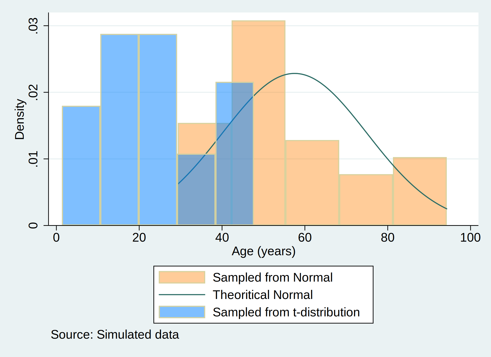

Introduction
The analysis of age distributions within populations is a cornerstone in demographic studies, enabling researchers to understand variations and underlying trends that might affect both social policies and economic frameworks. Normal and t-distributions are commonly used in statistics to model real-world data, where the former often underpins assumed symmetry in biological data, and the latter accommodates outliers by being more robust due to its heavier tails. This study aims to compare these two statistical models by applying them to simulated data representing ages in two distinct sample populations. Understanding the differences in these distributions can help in making more informed decisions when choosing statistical models for demographic analysis.
Methods
The study utilized Stata 15 software to simulate two separate datasets representing age distributions for two sample populations. The simulation was performed as follows: The Stata environment was cleared of previous data and settings, and a seed for random number generation was set to 340600 to ensure reproducibility of the results. A dataset of 30 observations was generated to represent the age of individuals from a population modeled by a normal distribution. The age variable age was created by adjusting a normally distributed random variable (mean = 57, standard deviation = 15). Concurrently, another age dataset for a different population was simulated using a t-distribution age_t, intended to capture a broader age range (mean = 17, scale = 15). For both datasets, histograms were plotted to visualize the distribution of age. The histograms were color-coded for distinction, orange for the normal distribution and blue for the t-distribution. Additionally, a theoretical normal curve was superimposed on the histograms to serve as a reference.The graphical output was configured to display the histograms side-by-side with associated legends and a title, Age distribution in two sample populations. This allowed direct visual comparison of the empirical data with the theoretical model. A footnote indicating the simulated nature of the data was also included in the graph.
. qui {
Figure 1. Age distribution of two sample populations
Results
The histogram of distribution of $\text{Age, years} \sim \mathcal{N}(\mu=57,,\sigma^{2}=225$ revealed distinct differences between the two simulated distribution. The normal distribution appeared symmetric around the mean age of 57 years, closely aligning with the theoretical normal curve superimposed on the graph. In contrast, the t-distribution, represented by the sample starting at a mean age of 17 years, showed a wider spread and heavier tails, indicating more variability and a potential presence of outliers.